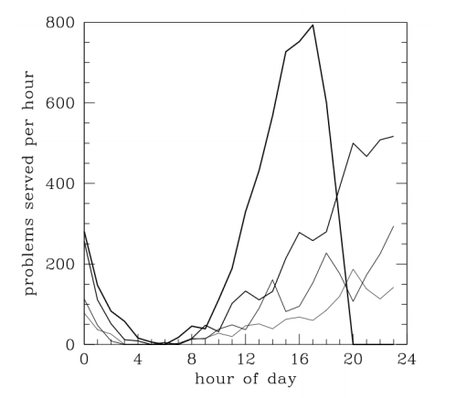

-
Service Description

Problem Roulette (PR) is a web-based study service at the University of Michigan that offers random-within-topic access to a large library of past exam problems in several different courses.
Problem Roulette (PR) is currently being used in 7 classes across 4 departments at the University of Michigan.
The first version of PR first rolled out in the Fall 2011 semester. An improved version of PR began in the Fall 2012 semester. The most recent version, which is currently running, began in the Fall 2013 semester.
-
Coming to a Class Near You
Interested in using Problem Roulette in your class?
University of Michigan Class: PR can easily be expanded to any U of M class free of charge. Only two things are required:
- 1. A set of multiple-choice problems
- 2. Time/money for you/a student to enter these problems on PR.
Feel free to contact the PR team at problemroulette@umich.edu
Not at the University of Michigan: You can host your own instance of PR using our freely available source code.
In addition to the two requirements above, you will need to provide a server to host your instance of PR.
We can help you with this process. Feel free to contact the PR team at problemroulette@umich.edu
Activity Leading up to Exam
PR activity on the Monday (lightest line), Tuesday, Wednesday and Thursday (boldest line) of the first midterm week. Examinations start at either 6:00 or 8:00 pm on Thursday.
This image shows the buildup of student engagement over the four days preceding the first midterm examination of the term. The volume of activity in the 24 hours preceding the exams nearly equals the activity of the three days prior.
From this evidence, we may surmise that students consider PR as more of a cramming service than a study service. But anecdotal evidence suggests that students working problems the day of the exam include a large fraction of regular users sharpening their skills. Like an athlete preparing for a game, they are warming up with the aim to hit the exam room already in the groove.
Meet the Problem Roulette Team
-
A computational cosmologist, Gus simulates the large-scale structure of the universe as an Arthur F. Thurnau professor of Physics and Astronomy. He has taught mechanics to thousands of aspiring scientists and engineers at Michigan with trademark problems featuring salamis and fine cheeses. Lecture slides from his Fall 2007 class, available on open.michigan, have been downloaded at more than 500 locations across the globe.
-
Mike is the lead developer for Problem Roulette. He is a senior in Engineering Physics and has been working on Problem Roulette since its start in 2011.
-
Feugiatrutrum rhoncus semper enim massa eu intesque ipsum velit orci dolorem. Atnatis dolor tincidunt nulla elit auctortis laculisi elit fauctortor natis loreet.
-
Feugiatrutrum rhoncus semper enim massa eu intesque ipsum velit orci dolorem. Atnatis dolor tincidunt nulla elit auctortis laculisi elit fauctortor natis loreet.
-
Feugiatrutrum rhoncus semper enim massa eu intesque ipsum velit orci dolorem. Atnatis dolor tincidunt nulla elit auctortis laculisi elit fauctortor natis loreet.
-
Feugiatrutrum rhoncus semper enim massa eu intesque ipsum velit orci dolorem. Atnatis dolor tincidunt nulla elit auctortis laculisi elit fauctortor natis loreet.